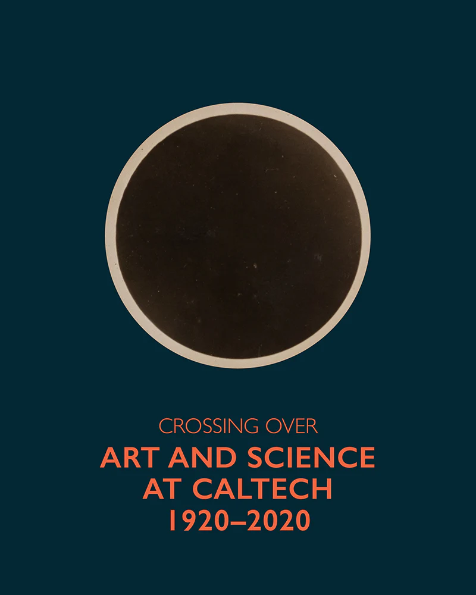
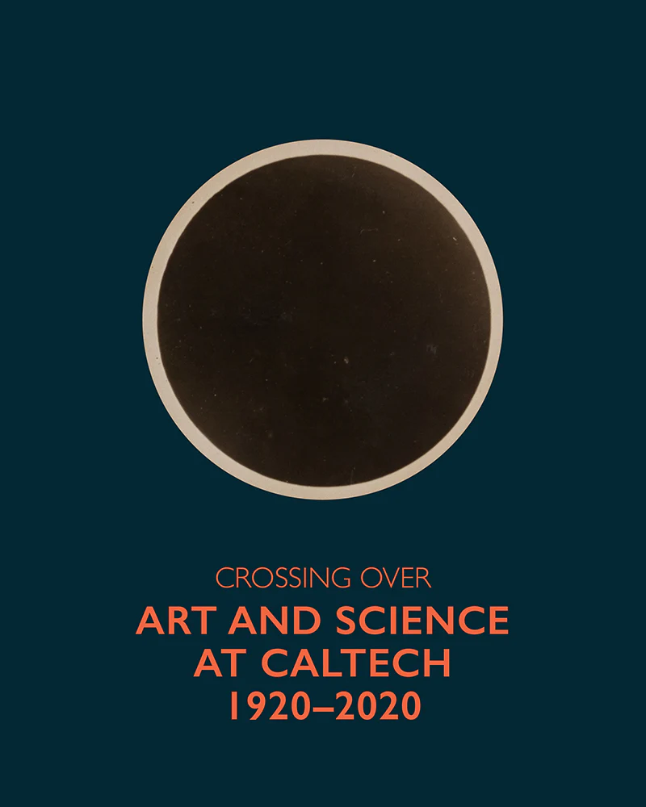

I am a historian, archivist, and curator of American science, technology, and media.
I study histories of video, computing, evolution, human sciences, visual culture, technologies of consciousness, and Caltech, where I am University Archivist and Head of Archives and Special Collections.
I coedited the 2024 book Crossing Over: Art and Science at Caltech, 1920–2020, including my own essay on art and technology, and directed an exhibition of the same title as part of Getty’s PST ART program. In 2020, I coproduced two series of presentations on Caltech’s history, one on exclusion and injustice and another on the 1910s and 1920s.
My research project “The Revolution Will Be Videotaped” explores how artists, psychotherapists, political organizers, and “video freaks” used video—and discourses of feedback and panpsychism which accompanied it—to experiment with mind and society in the 1960s and 1970s. I have published on video synthesizers, electronic photography, self-observation, video and psychedelics, and video art therapy.
In the history of biology and the human sciences, I have written about racist and antiracist physical anthropology and theistic evolutionism. I serve as a managing editor and web administrator of the History of Anthropology Review and maintain a history of cybernetics bibliography.
Courses I have taught include Electrifying Los Angeles, Curating Art and Science, America in the Cold War World, The Evolution Debates, Technology and Society, Cyberculture, Emergence of Modern Science, and, as a lab instructor, Introduction to the Principles of Bibliographical Description. I have been an organizer and board member of Mariposa Food Co-op and the Oberlin Student Cooperative Association, edited and programmed parts of Everything2, and worked as a web developer and science museum educator.
they/he
peter@collopy.net